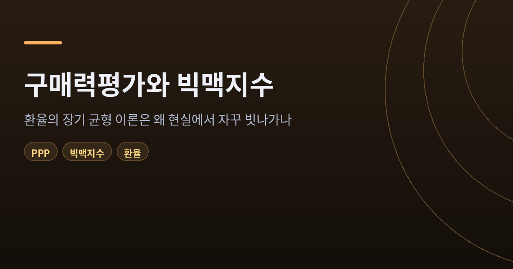
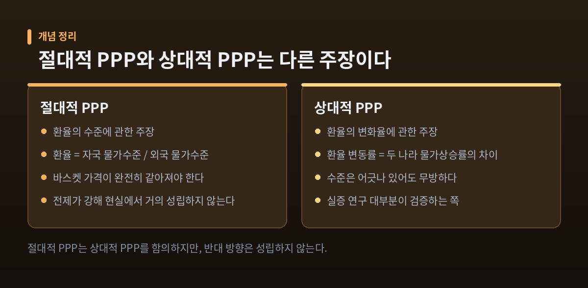
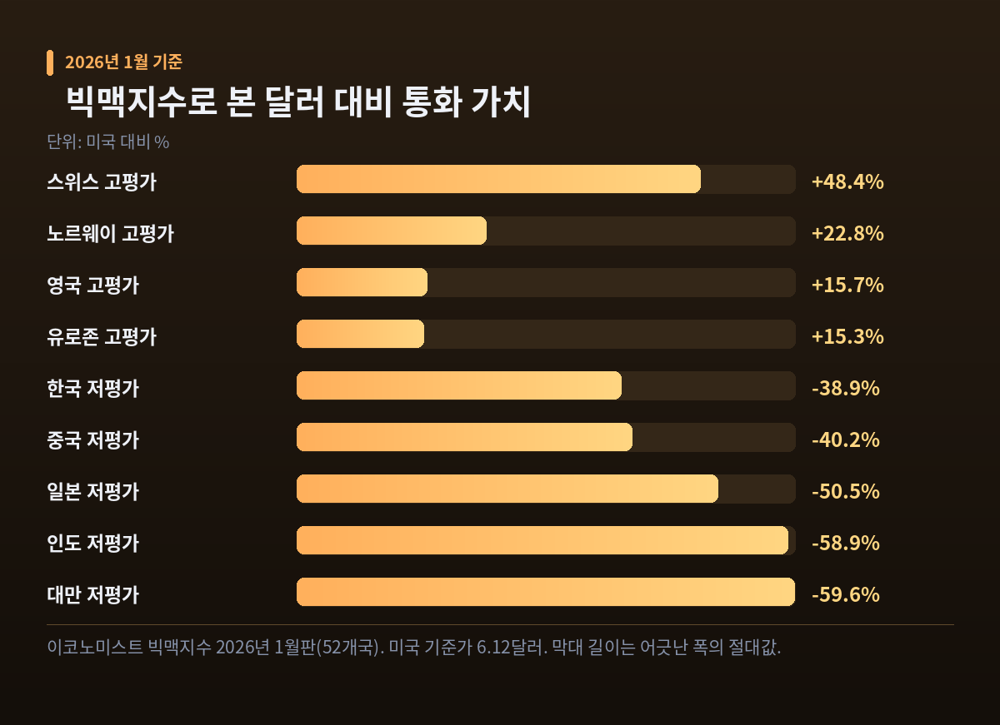
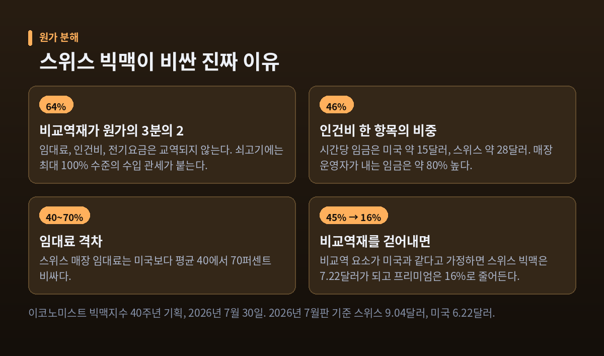
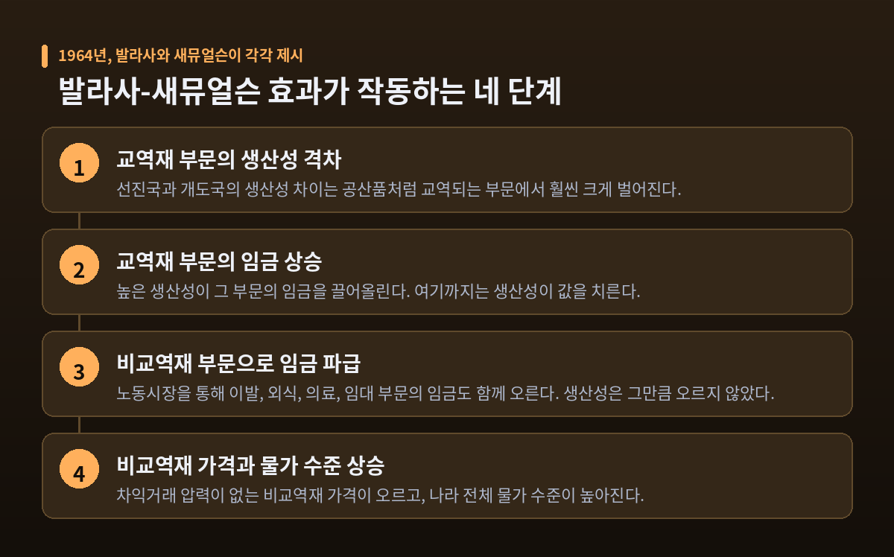
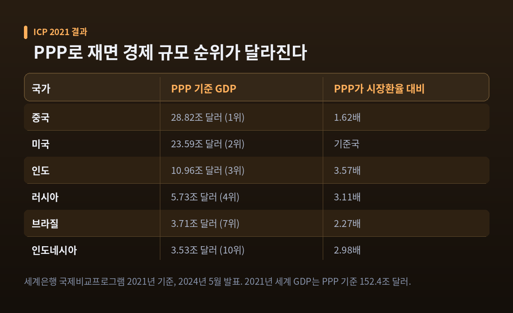

이번 글에서는 구매력평가(PPP) 이론과 빅맥지수를 정리해 보겠습니다. 환율이 장기적으로 물가 차이를 따라간다는 오래된 명제가, 현실에서는 왜 그렇게 자주 어긋나는지를 따라가 보려 합니다. 이론의 출발점부터 최신 수치까지 차례로 살펴보겠습니다.
이론의 출발점, 일물일가의 법칙
구매력평가의 뿌리는 단순한 문장 하나입니다.
같은 물건은 어디서나 같은 값이어야 한다.
이것을 일물일가의 법칙이라고 부릅니다. 무역장벽도 없고 운송비도 없고 거래 마찰도 없다면, 환율로 환산한 가격은 어느 시장에서든 같아야 한다는 뜻입니다. 값이 다르면 싼 곳에서 사서 비싼 곳에 파는 차익거래가 일어나고, 그 과정에서 가격은 다시 붙습니다.
구매력평가는 이 명제를 개별 상품에서 재화 바스켓 전체로 확장한 것입니다. 개별 상품 단위의 주장이 일물일가라면, 나라 전체의 물가 수준을 상대하는 주장이 PPP인 셈입니다.
문제는 전제 조건입니다. 관세도 있고 운송비도 있고 유통망을 까는 비용도 듭니다. 국제적으로 거래되는 재화의 경우 이런 거래비용이 가격의 20%를 넘는다는 추정도 있습니다. 전제가 깨지면 결론도 흔들립니다.
흥미롭게도 학술 문헌이 "일물일가가 잘 안 먹히는 대표 사례"로 오래전부터 들어온 상품이 있습니다. 맥도날드 햄버거입니다.
절대적 PPP와 상대적 PPP는 다른 주장입니다
두 가지를 구분하지 않으면 논의가 엉킵니다.
절대적 PPP는 수준(level)에 관한 주장입니다. 환율이 두 나라의 바스켓 가격을 완전히 같게 만드는 지점에 있어야 한다고 말합니다. 강한 주장입니다.
상대적 PPP는 변화율에 관한 주장입니다. 환율의 변동률이 두 나라 물가상승률의 차이와 같아야 한다고만 말합니다. 수준이 어긋나 있어도 상관없습니다. 어긋난 정도가 일정하게 유지되기만 하면 됩니다.
절대적 PPP가 상대적 PPP를 함의하지만, 반대 방향은 성립하지 않습니다. 그래서 절대적 PPP는 현실에서 거의 성립하지 않고, 실증 연구 대부분은 상대적 PPP 또는 실질환율의 평균회귀를 검증합니다.
오늘날 PPP가 상시 성립한다고 믿는 경제학자는 거의 없습니다. 다만 케네스 로고프가 1996년에 쓴 표현대로, 대부분은 여전히 PPP를 장기 실질환율의 "닻"으로 본능적으로 믿고 있습니다.

빅맥지수, 햄버거를 자로 삼다
빅맥지수는 1986년 9월 영국 이코노미스트의 기자 팸 우달이 만들었습니다. 처음부터 진지한 환율 평가 도구로 의도된 것이 아니었습니다. 추상적인 PPP 이론을 "조금 더 소화하기 쉽게" 만들어 보자는 반농담이었습니다. 버거노믹스라는 단어가 여기서 나왔습니다. 2026년 7월로 마흔 살이 됐습니다.
빅맥이 선택된 이유는 분명합니다. 맥도날드가 세계 곳곳에서 사실상 같은 재료와 규격으로 파는 덕분에, 국가 간 비교에서 '같은 상품'에 가장 가까운 소비재이기 때문입니다.
2026년 7월판(이코노미스트 2026년 7월 29일 발표, 54개국 기준) 수치는 이렇습니다.
- 미국 기준가 6.22달러
- 가장 비싼 스위스 9.04달러, 미국 대비 +45.4%
- 가장 싼 인도네시아 2.38달러
- 미국보다 비싼 나라는 54개국 중 단 12곳
나머지 42개 통화는 빅맥 기준으로 달러에 대해 저평가돼 있다는 뜻입니다.
나라별 어긋남의 폭은 바로 앞 판본에서 더 선명하게 드러납니다. 2026년 1월판은 52개국의 편차를 한 줄로 나열해 두었습니다.

이 지수가 실제로 재는 것은 환율입니다
가장 흥미로운 대목은 여기입니다.
2026년 1월판과 7월판 사이 6개월 동안, 54개국 중 21개국은 현지 통화 표시 빅맥 가격이 단 1단위도 바뀌지 않았습니다. 스위스도, 태국도, 대만도 그 안에 있습니다.
그런데 달러로 환산한 가격은 움직였습니다. 태국은 6.6% 내렸고, 필리핀은 3.6%, 대만은 1.9% 내렸습니다. 현지 가격 변동은 0%인데 말입니다.
매장에서는 아무 일도 없었습니다. 전부 외환시장에서 일어난 일입니다.
스위스 빅맥은 2008년부터 2022년까지 내내 7.3프랑이 아니라 6.5프랑이었습니다. 메뉴판은 열한 개 판본 동안 네 번밖에 바뀌지 않았습니다. 올라간 것은 버거 값이 아니라 프랑이었습니다.
그러니 빅맥지수는 음식 물가 지표가 아닙니다. 햄버거를 자로 삼은 환율 지표입니다.
원화는 왜 38% 저평가로 나오나
한국 수치를 보겠습니다.
2026년 7월판 기준 한국 빅맥은 5,700원, 3.84달러입니다. 미국의 6.22달러보다 38.3% 쌉니다. 적용 환율은 1,485.90원입니다.
바로 앞 판본인 2026년 1월판에서는 5,500원, 3.74달러, 저평가율 38.9%였습니다. 국내 보도는 이 수치를 빅맥지수 집계 이래 한국의 최저 기록으로 전했습니다.
여기서 직접 계산해 볼 수 있습니다. 빅맥 하나가 시사하는 원·달러 PPP 환율은 5,700원 ÷ 6.22달러, 곧 약 916원입니다. 실제 시장환율은 1,485.90원이었습니다. 둘 사이의 간격이 38%라는 숫자의 정체입니다.
국내에서는 그 배경으로 2022년 이후 이어진 강달러 기조, 지정학적 긴장, 그에 따른 원·달러 환율 급등을 꼽습니다. 한국과 미국 모두 외식 물가가 올랐지만 원화 가치가 더 크게 떨어지면서, 달러로 환산한 한국 빅맥이 유독 싸 보이는 일종의 착시가 생겼다는 설명입니다.
이 숫자를 어떻게 읽을지는 조심스러운 문제입니다. 수출기업의 가격경쟁력 측면에서는 유리하게 작용할 수 있습니다. 반면 가계의 실질 구매력은 위축되고 수입물가 부담은 커집니다. 한 방향으로만 좋은 숫자가 아닙니다.
비교역재라는 쐐기 — 스위스 버거의 64%
그렇다면 스위스 프랑은 정말 45% 고평가된 것일까요. 이코노미스트가 40주년 기획에서 버거 원가를 뜯어본 결과는 다르게 읽힙니다.
양파와 치즈는 쉽게 교역됩니다. 그러나 임대료, 인건비, 전기요금은 교역되지 않습니다. 쇠고기도 자유롭지 않습니다. 스위스는 자국 축산을 보호하기 위해 쇠고기 수입에 최대 100% 수준의 관세를 매깁니다.
이렇게 교역이 되지 않거나 고율 관세가 붙는 요소가 버거 원가의 64%를 차지합니다. 그중 인건비만 46%입니다.
- 시간당 임금: 미국 약 15달러 / 스위스 약 28달러(22프랑)
- 매장 운영자가 지불하는 임금: 스위스가 약 80% 높음
- 임대료: 스위스가 미국보다 평균 40~70% 비쌈
비교역 요소를 미국과 같은 비용이라고 가정하고 다시 계산하면, 스위스 빅맥 가격은 7.22달러로 내려갑니다. 프리미엄은 45%가 아니라 16%가 됩니다.
즉 겉보기의 '프랑 고평가' 중 상당 부분은 환율 이야기가 아니었습니다. 저숙련 노동에 훨씬 후하게 지급하고, 축산을 강하게 보호하고, 임대료가 매우 비싼 경제 구조가 버거값에 그대로 실린 것입니다.

발라사-새뮤얼슨 효과 — 부자 나라가 비싼 이유
비교역재 이야기를 한 단계 더 밀고 가면 널리 알려진 규칙성이 나옵니다.
펜 효과(Penn effect)입니다. 한 나라의 1인당 소득이 높을수록, 시장환율로 환산한 물가 수준도 함께 높아진다는 관찰입니다. 쉽게 말해 부자 나라는 비쌉니다. 펜 월드 테이블 자료에서 발견돼 이런 이름이 붙었습니다.
1964년 벨라 발라사와 폴 새뮤얼슨이 각각 독립적으로 그 인과 메커니즘을 제시했습니다. 네 단계로 정리할 수 있습니다.
- 선진국과 개도국의 생산성 격차는 교역재 부문에서 훨씬 크다.
- 교역재 부문의 높은 생산성이 그 부문의 임금을 끌어올린다.
- 노동시장을 통해 그 임금이 비교역재 부문으로 파급된다. 이발, 외식, 의료, 임대 같은 영역입니다. 생산성은 크게 오르지 않았는데 임금만 따라 오릅니다.
- 결과적으로 비교역재 가격이 오르고, 나라 전체 물가 수준이 높아진다.
핵심은 차익거래의 유무입니다. 교역재는 싼 곳에서 조달할 수 있으니 가격이 크게 벌어지기 어렵습니다. 비교역재는 그 압력에서 풀려나 현지 비용 구조를 그대로 반영합니다.
그래서 부유한 나라는 체계적으로 비싸고, 그 통화는 절대적 PPP 기준으로 늘 고평가로 계산됩니다. 이것이 PPP가 현실에서 빗나가는 가장 구조적인 이유입니다.
다만 학계에서는 펜 효과와 발라사-새뮤얼슨 효과를 같은 것으로 취급하지 말자는 지적도 나옵니다. 펜 효과는 관찰된 상관관계이고, 발라사-새뮤얼슨은 그에 대한 하나의 공급측 설명일 뿐이라는 것입니다.

PPP 퍼즐 — 반감기 3~5년을 둘러싼 논쟁
이론이 장기에는 맞는다고 치겠습니다. 그렇다면 그 장기는 얼마나 긴 것일까요.
로고프가 1996년에 던진 질문이 바로 이것입니다. 실질환율의 단기 변동성은 대단히 큽니다. 그런데 PPP로 돌아오는 속도는 극도로 느립니다. 이 두 가지를 동시에 설명하기 어렵다는 것이 구매력평가 퍼즐입니다.
여기서 쓰이는 척도가 반감기입니다. 충격의 효과가 절반으로 줄어드는 데 걸리는 시간을 말합니다. 로고프는 장기 시계열 연구들 사이에 3~5년이라는 "놀라운 합의"가 있다고 정리했습니다.
왜 이것이 퍼즐일까요. 명목가격 경직성으로 설명할 수 있는 기간은 길어야 1~2년입니다. 실제로 물가의 반감기는 대체로 1~2년인데, 명목환율의 반감기는 3~6년으로 추정됩니다. 메뉴비용이나 임금계약으로 설명하기에는 너무 깁니다.
그런데 이 '합의'는 지금 흔들리고 있습니다.
- 에디슨의 연구는 반감기를 약 7.3년으로 보고했습니다. 훨씬 깁니다.
- 머리와 파펠은 여러 지속성 측정치의 구간추정을 구해보면 3~5년 가설을 뒷받침할 근거가 거의 없다고 주장합니다. 점추정치 하나로 합의를 말하는 것 자체가 과신이라는 비판입니다.
가장 흥미로운 반론은 방향을 바꿉니다. 애초에 선형 도구로 잰 것이 잘못이라는 지적입니다.
차익거래에는 비용이 듭니다. 이탈 폭이 거래비용보다 작으면 차익거래가 돈이 되지 않으므로 아무 조정도 일어나지 않습니다. 이를 무행동 구간, 또는 거래비용 밴드라고 부릅니다. 밴드 바깥으로 나가면 멀어질수록 되돌아오는 힘이 강해집니다. 그래서 환율은 대부분의 시간을 패리티에서 벗어난 채로 보냅니다.
옵스펠드와 테일러는 임계자기회귀 모형으로 이를 검증해, 선형 모형이 놓쳤던 그럴듯한 수렴 속도를 찾아냈습니다. 느린 선형 수렴처럼 보였던 것이, 사실은 밴드 안에서는 멈춰 있고 밖에서는 빠르게 움직이는 비선형 과정이었을 수 있다는 이야기입니다.
이 착상 자체는 새롭지 않습니다. 헥셰르가 1916년에 이미 비슷한 지적을 했습니다.
어느 자로 재느냐에 따라 세계 1위가 바뀝니다
PPP가 가장 실용적으로 쓰이는 곳은 환율 예측이 아니라 국가 간 경제 규모 비교입니다.
세계은행이 주관하는 국제비교프로그램(ICP)이 그 일을 합니다. 1968년에 시작해 2021년 주기가 열 번째 비교였습니다. 176개국이 참가했고, 세계은행은 이를 토대로 192개 경제권의 PPP 기준 GDP를 산출했습니다. 각국 통계기관이 공통 바스켓의 품목 가격을 조사해 올리고, 지출 비중을 가중치로 삼아 환산율을 계산하는 방식입니다.
2024년 5월 발표된 ICP 2021 결과는 이렇습니다.
- 세계 GDP(PPP 기준, 2021년): 152.4조 달러
- 1인당으로는 20,271달러
- 중소득국이 절반 이상, 고소득국이 절반에 약간 못 미침, 저소득국은 전체의 겨우 1%
순위는 시장환율로 잴 때와 크게 달라집니다. 2021년 PPP 기준 1위는 중국(28.82조 달러)이고 미국(23.59조 달러)이 2위였습니다. 같은 해 중국의 시장환율 기준 GDP는 17.81조 달러입니다. PPP로 재면 1.62배로 불어납니다.
배율이 더 큰 나라들도 있습니다. 인도는 3.57배, 러시아는 3.11배, 인도네시아는 2.98배, 브라질은 2.27배입니다.

이유는 앞에서 본 그대로입니다. 개도국은 건설과 서비스 같은 비교역재 비중이 크고, 그 가격이 국제 평균을 크게 밑돕니다. 그래서 PPP로 환산하면 경제 규모가 눈에 띄게 커집니다.
다만 총량과 1인당은 전혀 다른 이야기입니다. 중국의 2021년 PPP 기준 1인당 GDP는 20,407달러로 세계 85위였습니다. 총량 1위와 1인당 85위가 동시에 성립합니다.
한국은 어떨까요. 세계은행 ICP 기준 2021년 한국의 PPP 환산율은 808.46원입니다. 기관에 따라 840원대로 보는 자료도 있어 자릿수만 받아들이는 편이 안전합니다. 민간소비 기준으로는 2020년 968.47원으로 더 높습니다. 소비 바스켓에 비교역 서비스가 많이 들어가기 때문입니다.
같은 '원/달러'인데 숫자가 이렇게 다릅니다.
- 세계은행 ICP 종합 바스켓(2021): 약 808원
- 빅맥 하나로 잰 PPP(2026년 7월): 약 916원
- 실제 시장환율(2026년 7월 적용치): 1,485.90원
세 숫자 중 무엇이 '진짜 환율'이냐고 물으신다면, 답은 셋 다 아니라는 것입니다. 각자 다른 질문에 답하는 숫자입니다.
그래서 PPP는 쓸모없는 이론인가
여기서 한계를 분명히 해두는 편이 좋겠습니다.
세계은행 스스로 PPP 결과는 각국의 공식 통계가 아니라고 밝힙니다. ICP 글로벌 사무국과 지역 이행기관이 산출한 결과이지, 참가국이 국가 공식 통계로 생산한 수치가 아닙니다. 더 중요한 경고도 있습니다. PPP는 한 나라의 환율 수준을 판단하는 근거로 사용될 수 없다는 것입니다.
빅맥지수의 한계는 더 노골적입니다. 인도의 '빅맥'은 사실 빅맥이 아닙니다. 종교적 이유로 쇠고기 대신 닭고기나 파니르를 쓰는 마하라자 맥입니다. 복수 환율이 도는 나라에서는 어느 환율을 쓰느냐에 따라 결과가 통째로 달라집니다. 2026년 7월판이 다루는 나라는 54개국뿐입니다. 아프리카는 남아공과 이집트 두 곳이 전부입니다. 맥도날드가 없는 곳에는 빅맥지수도 없습니다.
그럼에도 이 지수가 40년을 버틴 이유는 따로 있다고 생각합니다. 틀리는 방식이 일정하기 때문입니다.
어느 나라가 얼마나 빗나가는지를 보면, 그 나라의 임금 수준과 임대료와 관세 구조와 비교역재 비중이 드러납니다. 예전에는 이 지수를 환율이 맞는지 틀렸는지 판정하는 도구로 읽었습니다. 지금은 왜 빗나가는지를 묻는 출발점으로 읽는 편이 훨씬 유용합니다.
정리하면 이렇습니다.
구매력평가는 틀린 이론이 아니라, 전제가 매우 강한 이론입니다. 일물일가가 성립하려면 차익거래가 자유로워야 하는데, 버거 원가의 3분의 2는 애초에 거래될 수 없는 것들입니다. 여기에 생산성 격차가 비교역재 임금을 밀어 올리는 구조가 겹칩니다. 그래서 어긋남은 예외가 아니라 상태가 됩니다.
"PPP는 환율이 향할 곳을 알려주는 지도가 아니라, 지금 어디에 서 있는지 알려주는 눈금입니다."
숫자가 빗나갈 때, 이론이 틀렸다고 말하기는 쉽습니다. 다만 그 빗나감의 크기와 방향에 이미 답이 적혀 있는 경우가 더 많습니다. 햄버거 하나가 마흔 해 동안 살아남은 것도 그 때문일 것입니다.